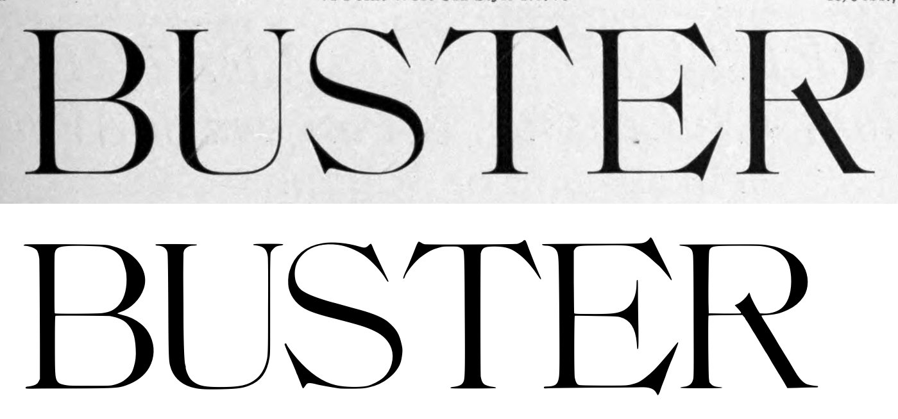
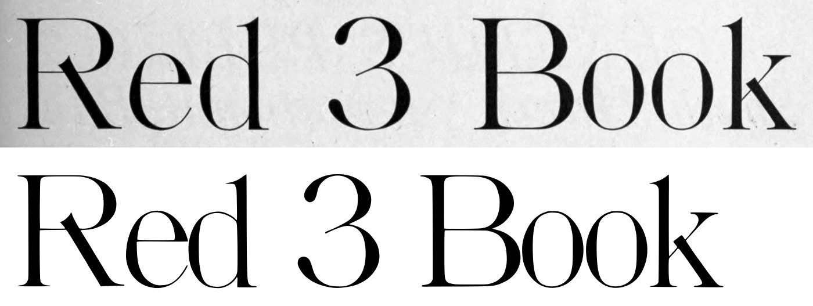
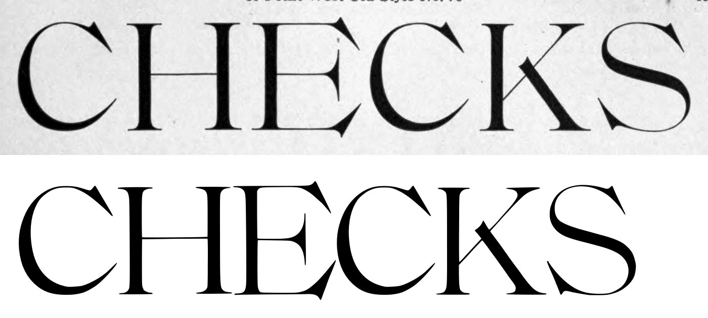
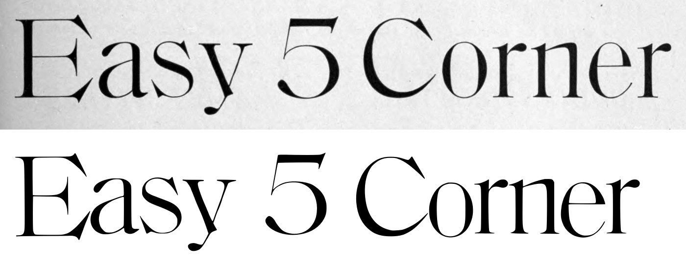
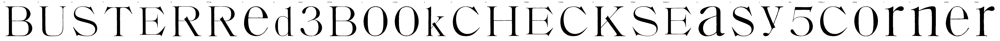

Gray letters are constructed, not traced.


4 warnings, 2 notes.
[
{
"level": "warn",
"check": "trace_iou",
"glyph": "U",
"value": 0.941,
"note": "potrace trace overlaps the scan by less than 94% (cap 310 px)"
},
{
"level": "warn",
"check": "trace_iou",
"glyph": "T",
"value": 0.946,
"note": "potrace trace overlaps the scan by less than 94% (cap 310 px)"
},
{
"level": "warn",
"check": "trace_iou",
"glyph": "E",
"value": 0.935,
"note": "potrace trace overlaps the scan by less than 94% (cap 310 px)"
},
{
"level": "info",
"check": "specks",
"glyph": "E",
"value": 1,
"note": "marks beside the letter were recorded, not cut"
},
{
"level": "warn",
"check": "trace_iou",
"glyph": "k",
"value": 0.944,
"note": "potrace trace overlaps the scan by less than 94% (cap 310 px)"
},
{
"level": "info",
"check": "specks",
"glyph": "E.60pt",
"value": 1,
"note": "marks beside the letter were recorded, not cut"
}
]
{
"141:72pt": {
"n_caps": 8,
"cap_height_px": 310.5,
"cap_source": "caps",
"baseline_px": 1953.0,
"baselines": {
"4": 1953.0,
"5": 2372.0
},
"glyphs": [
"B",
"U",
"S",
"T",
"E",
"R",
"R.72pt",
"e",
"d",
"three",
"B.72pt",
"o",
"o.72pt",
"k"
],
"x_height_px": 215,
"figure_height_px": 315,
"stem_px": 28.0,
"scale": 2.25443,
"stem_units": 63.1,
"x_height": 485,
"figure_height": 710
},
"141:60pt": {
"n_caps": 8,
"cap_height_px": 266.0,
"cap_source": "caps",
"baseline_px": 990.5,
"baselines": {
"2": 990.5,
"3": 1352.0
},
"glyphs": [
"C",
"H",
"E.60pt",
"C.60pt",
"K",
"S.60pt",
"E.60pt_2",
"a",
"s",
"y",
"five",
"C.60pt_2",
"o.60pt",
"r",
"n",
"e.60pt",
"r.60pt"
],
"x_height_px": 186.0,
"figure_height_px": 274,
"stem_px": 8.5,
"scale": 2.63158,
"stem_units": 22.4,
"x_height": 489,
"figure_height": 721
}
}
{
"archive_id": "bookoftypespecim00barnrich",
"title": "Book of type specimens. Comprising a large variety of superior copper-mixed types, rules, borders, galleys, printing presses, electric-welded chases, paper and card cutters, wood goods, book binding machinery etc., together with valuable information to the craft. Specimen book no.9",
"creator": [
"Barnhart, bros. & Spindler, firm, type founders, Chicago",
"De Young family",
"De Young, Charles, 1881-"
],
"publisher": "Chicago, Barnhart bros. & Spindler",
"date": "[1907]",
"ppi": 400,
"url": "https://archive.org/details/bookoftypespecim00barnrich",
"copyright_status": "NOT_IN_COPYRIGHT",
"contributor": "University of California Libraries",
"leaves": [
140,
141
]
}